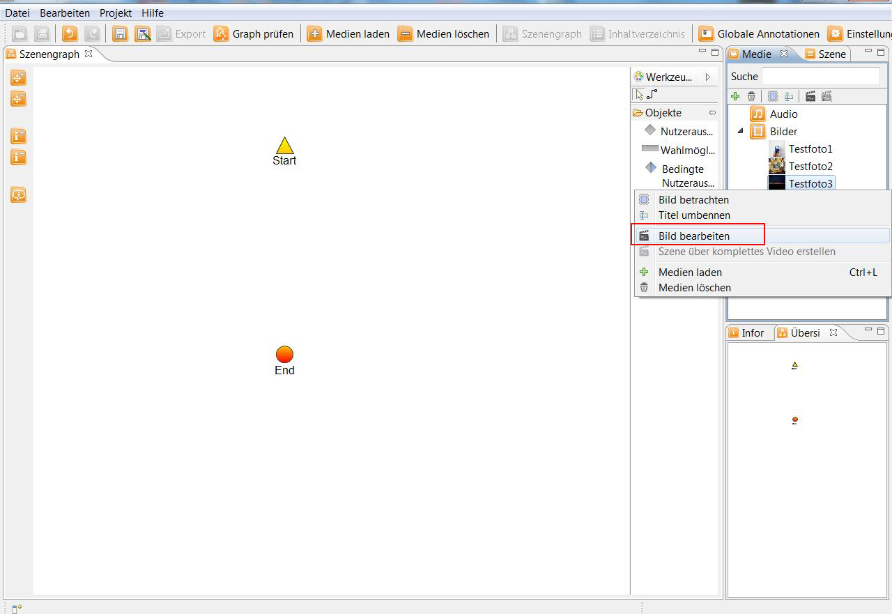
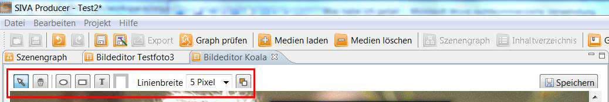
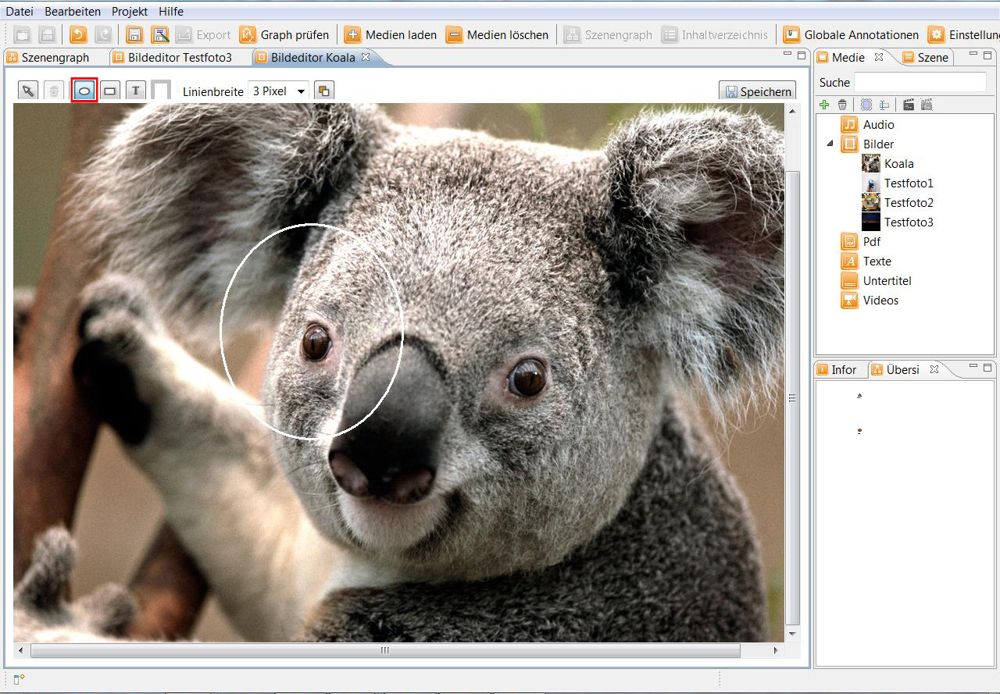
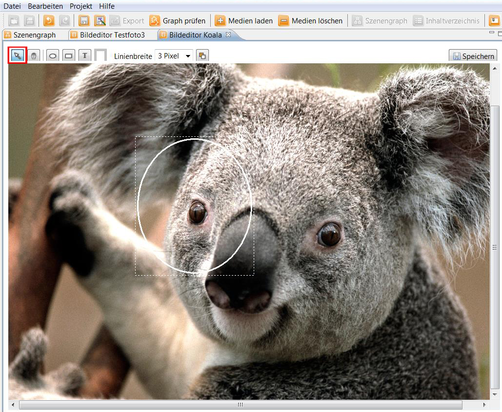
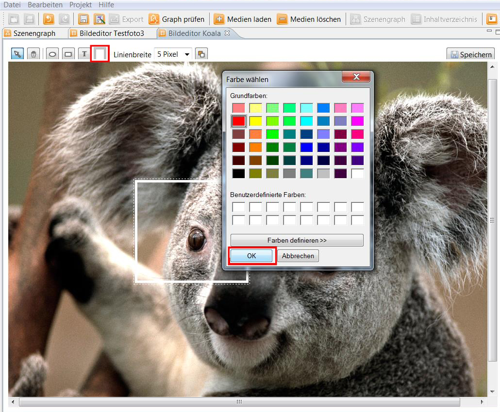
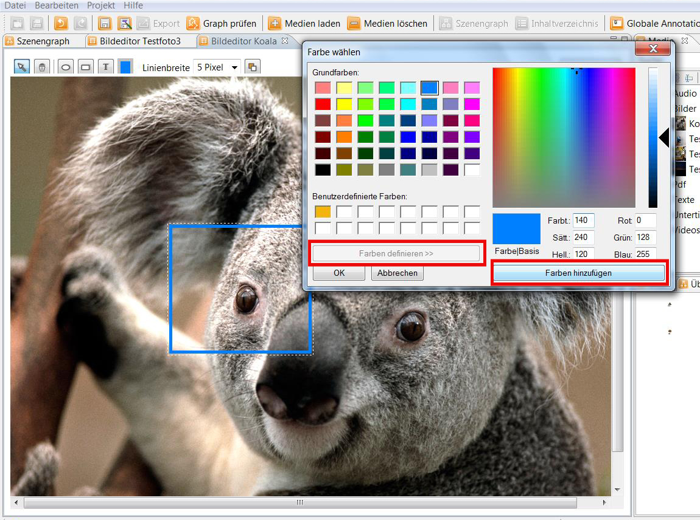
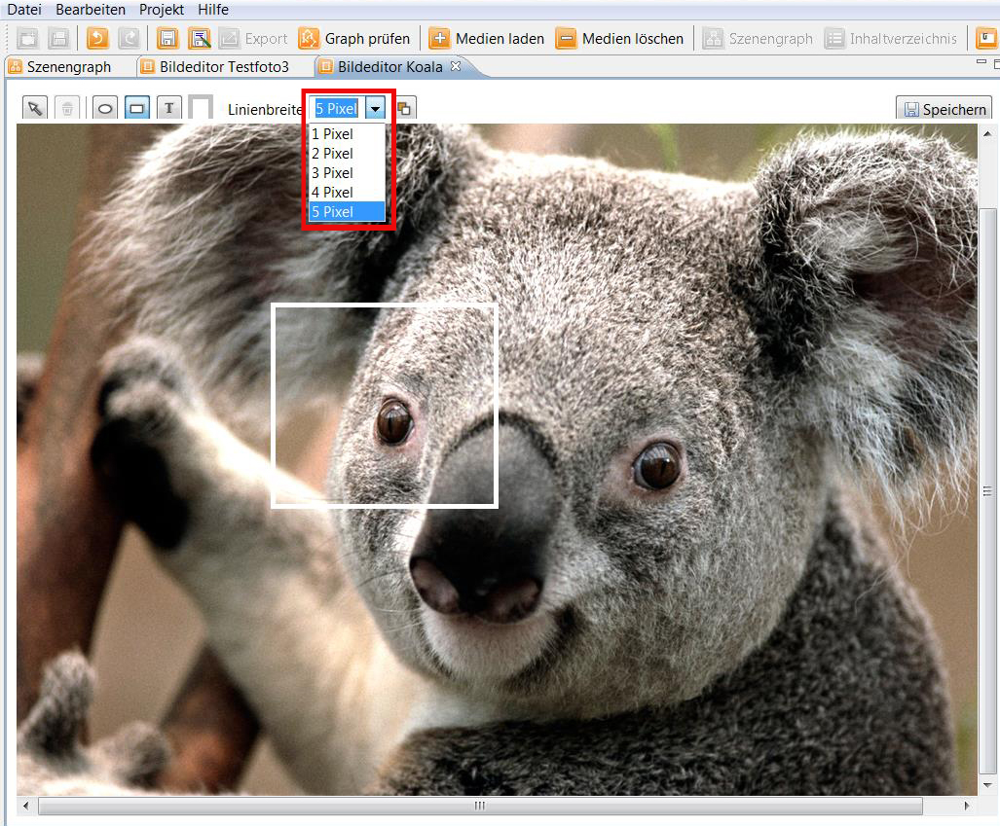
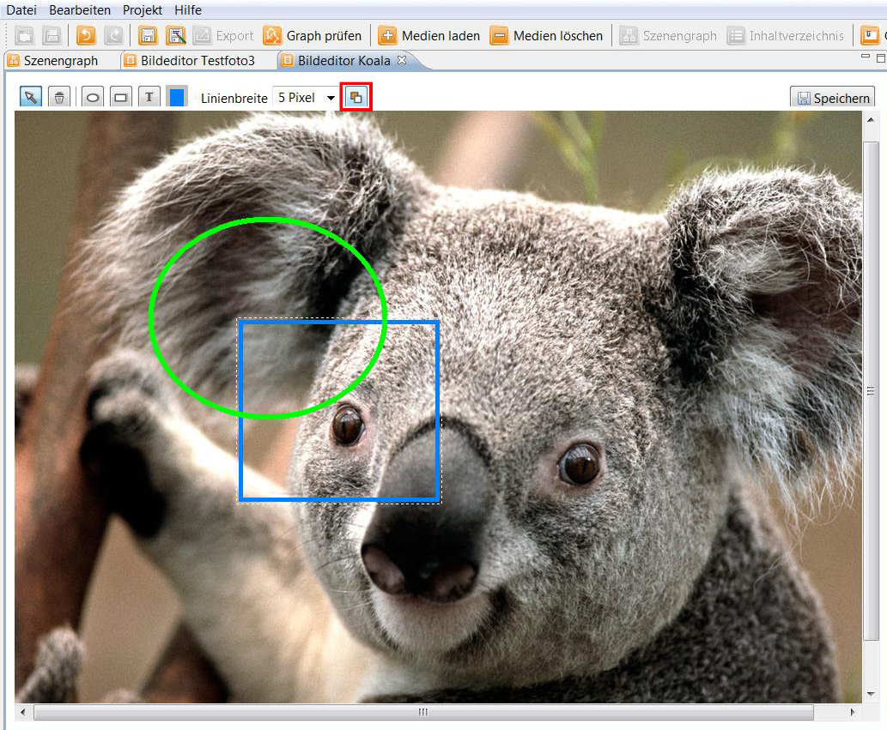
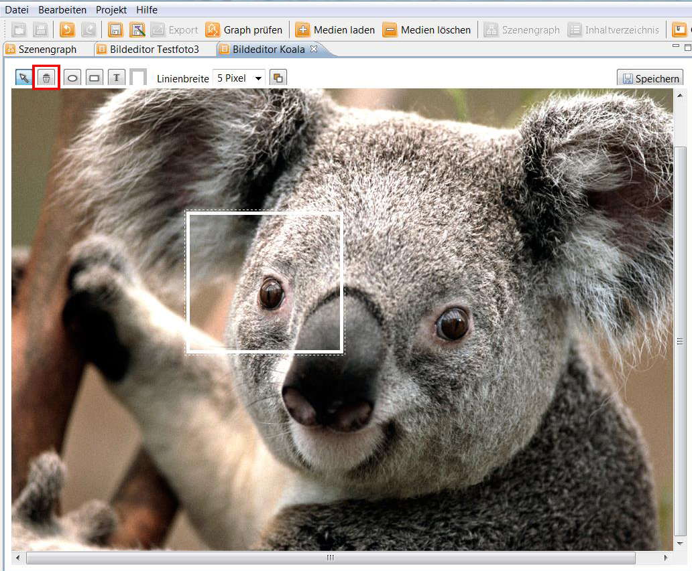
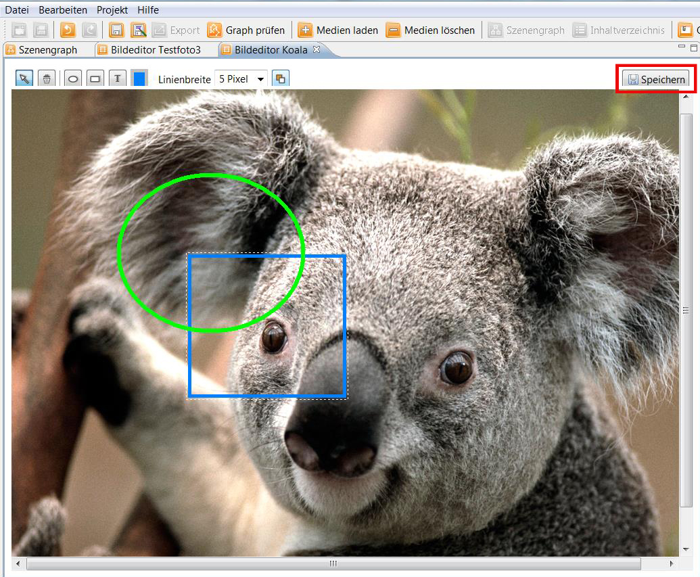

Bildeditor
Mit dem Bildeditor können Bilder, die in ein Projekt im SIVA Producer eingefügt wurden, bearbeitet werden.
Der Bildeditor kann geöffnet werden indem man auf das Bild, das man bearbeiten will, im Medien-Repository
einen Rechtsklick macht und "Bild bearbeiten" auswählt.

Nun sollte sich das Bild im Bildeditor öffnen.
Oben links befinden sich die verschiedenen Funktionen.

Im Folgenden werden diese erklärt:
- Um einen Kreis zu machen klickt man auf das Kreis-Symbol und zieht, indem
man die linke Maustaste gedrückt hält, an der gewünschten Stelle im Bild einen Kreis auf.

- Um ein Rechteck zu machen klickt man das Rechteck-Symbol an und zieht, indem
man die linke Maustaste gedrückt hält, an der gewünschten Stelle im Bild ein Rechteck auf.
- Mit der "Auswahl" können Sie die von Ihnen erstellten Elemente bewegen. Auch Größe und Form
können verändert werden indem Sie die gestrichelte Linie, die um das Element herum erscheint, bewegen.

- Über das Feld "Farbe auswählen" kann man die Farbe, die ein Element haben soll, auswählen.

- Neben den Grundfarben können auch weitere Farben definiert werden.

- Die Linienbreite eines Elements kann verändert werden indem man das Drop-Down-Menü aufklappt und
die gewünschte Breite auswählt.

- Wenn sie mehr als ein Element erstellt haben, können Sie deren Reihenfolge verändern und entscheiden welches in
den Hintergrund rücken soll.

- Wollen Sie ein erstelltes Element löschen, so müssen Sie es markieren und "löschen" anklicken.

- Um die Änderungen an Ihrem Bild zu speichern klicken Sie auf den "Speichern"-Button.
